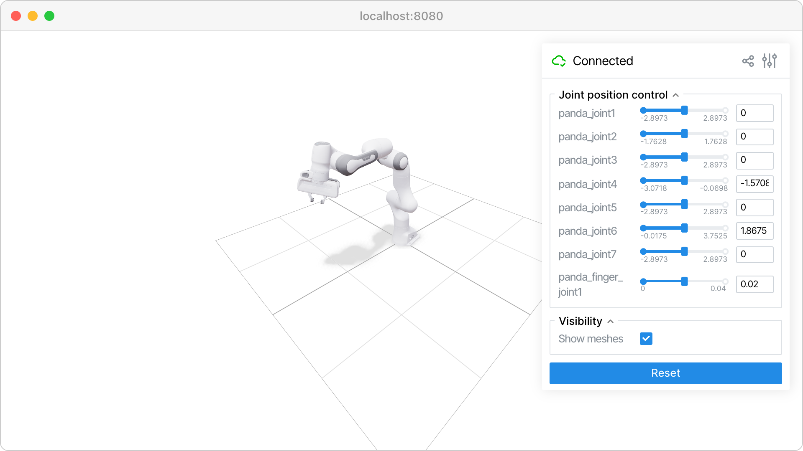
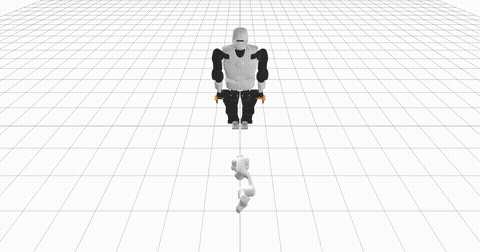
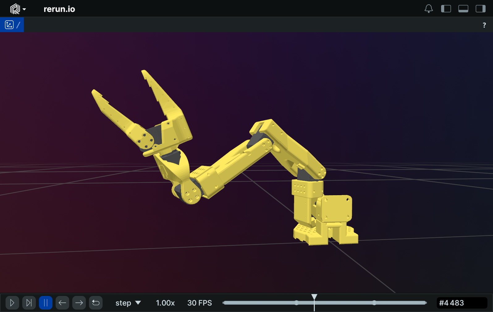
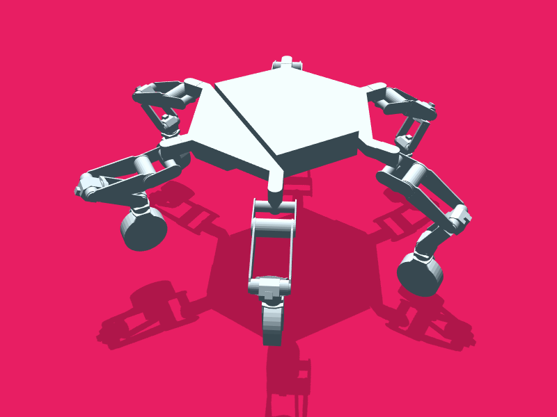
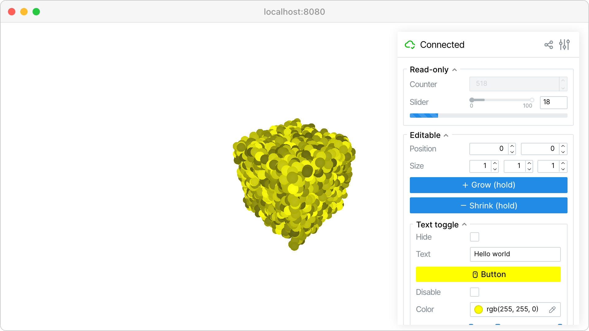

A discussion document on what to build, why, and which viewer/engine to pick — written ahead of an architecture conversation about integrating a simulator into atlas for the Fairino FR30 palletizing robot.
Before picking tools we need to be clear on why we'd run a simulator at all. Three reasons matter for atlas — and they're not the same shape of work.
Live mirror of what the follower thinks its joints/EE pose are. Always on whenever a Fairino is connected. The Tesla screen. No physics, no rollouts — just a live skeleton with overlays.
The Robot Controller (classical-control leader) proposes a trajectory → sim plays the rollout → human reviews → clicks approve → real follower executes. Every command requires approval.
Hardware is attached, but we want to test the command first in the virtual world before letting the motors move. Solved by a sim_mode flag on RobotNode, not by a separate fake robot. See section 2 — these are different things.
The word "sim" has been doing two unrelated jobs. We give them different names and never let them touch.
A sibling Python package inside atlas: atlas/sim_viewer/, next to servo7/. Runs in-process. Serves a viser scene on a local port (e.g. :8080) which the atlas frontend iframes.
What it does
SystemState for the robot it's mirroring; pushes joint updates into the viser sceneWhat it does NOT do
It is a view layer. Replace it with a different renderer and atlas would not notice.
Lives in atlas, inside RobotNode behind a sim_mode flag. Same EngineBackend Protocol that RobotControllerNode uses for planning in v2.
What it does
RobotState (kinematics in v1, MuJoCo in v3)SystemState["fairino"] exactly as the real driver wouldRobotNode.sim_mode == True — same RobotNode, same robot_id, no hardware movesWhat it does NOT do
Robot subclass — there is only one Fairino driverIt is the gate in RobotNode. Flip the flag, the same RobotNode produces simulated state instead of hardware state. The visualizer doesn't know or care.
SystemState["fairino"] and renders whatever is in it — encoder-derived or sim-engine-derived. It cannot tell the difference, and that's the point.
class RobotNode:
def __init__(self, robot: Robot, sim_mode: bool = False):
self.robot = robot # real Fairino driver — instantiated either way
self.sim_mode = sim_mode # the flag
self.sim_engine = KinematicEngine(robot.urdf) # always present, used when flag is on
def connect(self) -> None:
if not self.sim_mode:
self.robot.connect() # only touch hardware when in hardware mode
def handle_action(self, action: RobotState) -> None:
if self.sim_mode:
new_state = self.sim_engine.step(action, dt)
system_state.update_state(self.robot_id, new_state)
else:
self.robot.set_state(action)
system_state.update_state(self.robot_id, self.robot.get_state())
def set_sim_mode(self, on: bool) -> None:
"""Live toggle. WS message from frontend can call this."""
if on and not self.sim_mode:
self.robot.disconnect() # release hardware
elif not on and self.sim_mode:
self.robot.connect() # reclaim hardware
self.sim_mode = on
The driver class is always instantiated, but connect() is skipped while the flag is on. This is the live-flip-friendly design: poke a trajectory in sim_mode, flip via a WS message, re-run the same trajectory on hardware without restarting RobotNode.
This is where the most confusion happens because the candidates live at different layers. Some are physics engines, some are renderers, some are libraries you build a renderer with. The table is the quickest way to see it:
| Tool | What it is | 3D render | GUI controls | Physics | In browser |
|---|---|---|---|---|---|
| three.js | Low-level JS 3D library | yes | no (DIY) | no | yes |
| MeshCat | three.js + Python WS bridge | yes | no | no | yes |
| viser | three.js + Python + GUI framework | yes | yes | no | yes |
| Rerun | Rust+wasm telemetry viewer | yes | weak | no | yes |
| MuJoCo | Physics engine w/ native viewer | yes | no | yes | no (desktop) |

three.js + Python + a GUI panel framework. @button.on_click decorators, transform gizmos for waypoint authoring, scene labels and mesh recolor — everything we listed as mandatory, out of the box.
Maintenance: active (v1.0.26, Mar 2026, Nerfstudio team). Forkable if it goes stale (~3k LOC Python).
Risk: small team. We pin the version.

Same three.js renderer as viser, with a Python-WS bridge. No GUI controls layer — for buttons you'd add Streamlit/Gradio alongside, which means two web UIs to iframe.
Maintenance: no commits in 12+ months. Was the standard for Drake/Pinocchio users in 2020–2023.
Why we'd skip: worse than viser on every axis we care about today.

Excellent telemetry/time-series viewer. URDF loading is first-class (improved again in 0.28/0.29). But custom buttons that call back to Python are not a first-class primitive — fine for "view a rollout afterwards", weak for "approve this now".
Role: not the interactive viewer. Use it alongside viser later for trajectory replay and joint-trace scrubbing.

Battle-tested URDF parser (gkjohnson, used at JPL). You'd build the websocket protocol, button bridge, waypoint gizmos, and label layer yourself. Roughly 2 weeks of work that viser hands you for free.
When this wins: we hit a wall with viser and need full control. Not v1.
Best-in-class rigid-body physics with contact. Native OpenGL viewer — not iframeable. MuJoCo-WASM compiles physics to the browser but ships no GUI.
Role: a physics layer for the Robot Controller's internal engine when we want contact-rich behaviour (grasp stability, slip, force control). v1 doesn't need it; v3 does.

Buttons, sliders, dropdowns, file uploads, foldable panels, transform gizmos, 3D click events, scene labels with color overlays. All controlled from Python with decorators. This is the specific reason viser wins for the approve-gate flow.
No JavaScript written on our side.
The follower is always one robot. What changes is who is driving it. Atlas already has Teleop, AI and Emergency Stop. We're adding a fourth leader: Robot Controller.
Human leader arm drives the follower. Real-time, no preview.
Neural policy drives the follower. Real-time, no preview.
Classical control: trajectory planning, IK, force control. Every command rendered in the Sim Viewer and approved by a human before execution.
Override. Blocks all other leaders. Existing behaviour.
The Sim Viewer is always rendering the follower's live state. The mode only changes whether the viewer's buttons are active as a command source.
Everything plugs through SystemState. The Sim Viewer is a sibling Python package living inside atlas's process — it registers a callback on SystemState directly. No new transport layer, no inter-process serialization.
┌─ atlas process ──────────────────────────────────────────────────┐
│ │
│ ┌────────────────────────────────────────────────┐ │
│ │ RobotNode (one per robot) │ │
│ │ │ │
│ │ action ──► sim_mode flag ─┬─► [True] ──► │ │
│ │ │ sim_engine.step ──┐ │
│ │ │ │ │
│ │ └─► [False] ──► │ │
│ │ robot.set_state ──►│ │
│ │ robot.get_state ──►│ │
│ │ │ │
│ │ Sim engine ticks at 100 Hz even when no command │ │
│ │ (so SystemState stays live). │ │
│ └─────────────────────────────────────────────────────┼────────┘
│ │
│ ──── state ────────────────────┴────────►
│ SystemState
│ ["fairino"]
│ │
│ │ callbacks
│ ┌───────────────────────┤
│ ▼ ▼
│ ┌─────────────────┐ ┌──────────────────┐
│ │ Orchestrator │ │ sim_viewer/ │
│ │ + WS :8765 │ ◄─►│ (in-process │
│ │ + CommandRouter │ │ Python package) │
│ │ + Mode gate │ │ │
│ commands ──►└─────────────────┘ │ viser server │
│ mode gate ▲ │ on :8080 ──────┼────►
│ ▲ │ SET_SIM_MODE │ URDF render │
│ │ │ │ callbacks ←─────┤
│ ┌────────┼────────┬──────────┐ │ SystemState │
│ │ │ │ │ │ buttons → call │
│ Teleop AI Robot Emergency │ atlas Python │
│ Controller Stop │ directly │
│ Node (v2) └──────────────────┘
│ │
│ RobotControllerNode (v2) owns: │
│ • SimCore + same EngineBackend used by RobotNode │
│ • Validators (torque, collision, …) │
│ • Proposal/Approval state machine │
│ • Calls sim_viewer.show_proposal(…) directly │
│ │
└───────────────────────────────────────────────────────┼─────────
│
┌───────────── atlas-frontend :3000 ────────────┴─────────┐
│ AtlasSimPanel.jsx → <iframe src="localhost:8080"/> │
│ Plus sim-mode toggle (sends SET_SIM_MODE over :8765) │
└─────────────────────────────────────────────────────────┘
The Sim Viewer is a sibling of servo7/ inside the same atlas Python process. Two consequences: state moves as a Python callback (no serialization, no WS hop), and the Approve/Reject buttons inside viser can invoke atlas functions directly (no new WS message types like APPROVE/REJECT ever ship).
CommandRouter to RobotNode.RobotNode calls self.robot.set_state(action) → motors move.self.robot.get_state() → encoders read → SystemState.CommandRouter to RobotNode.RobotNode sees the flag; calls self.sim_engine.step(action, dt). Hardware untouched.SystemState.RobotControllerNode uses the same EngineBackend Protocol. One engine, two consumers.| Channel | Endpoints | Carries |
|---|---|---|
| Sim Viewer ↔ atlas | In-process Python callbacks | State change callbacks from SystemState. Button clicks call atlas functions directly. No serialization, no WS. |
| browser iframe ↔ Sim Viewer | WS :8080 (viser internal) | Scene updates, button clicks, gizmo drags. All handled by viser itself. |
| frontend ↔ atlas | WS :8765 (existing) | STATE_UPDATE, mode changes, recording, SET_SIM_MODE (new in v0). Unchanged transport. |
class EngineBackend(Protocol):
def step(self, joint_cmd: list[float], dt: float) -> EngineState: ...
def reset(self, q: list[float]) -> None: ...
def add_body(self, urdf_or_mesh: str, pose: Pose) -> BodyHandle: ...
# v1 / v2 — kinematics + collision, no physics
class KinematicEngine(EngineBackend):
# pinocchio FK + hpp-fcl collision
# v3 — full physics, no atlas changes needed
class MujocoEngine(EngineBackend):
# contact, gripper success, slip
Rule: no engine types cross the SimCore boundary. No mjData in the rest of atlas, no pinocchio.Model in the Sim Viewer. EngineState is pure data: joint positions, EE pose, optional contact list. Swap engines = one config line; nothing else moves.
Goal: RobotNode can route commands to a sim engine instead of hardware. Verified entirely from the backend; no UI work yet.
servo7/sim/kinematic_engine.py — EngineBackend impl (pinocchio FK + hpp-fcl)sim_mode flag on RobotNode + the engine instanceSET_SIM_MODE WS handler for live toggle (driver connect/disconnect on flip)SystemState["fairino"] updates; real arm stays still. Flip flag off, send same command, real arm moves.Goal: the operator can see what v0 already routes. Visual feedback for the sim/hardware mode that's already working.
atlas/sim_viewer/ (next to servo7/)pyproject.toml:8080SystemState; pushes joint updates into the viser sceneAtlasSimPanel.jsx with <iframe src="localhost:8080"/> + sim-mode toggle buttonGoal: classical control leader plans, sim shows it, human approves.
ControlMode.ROBOT_CONTROLLERRobotControllerNode with SimCore + KinematicEngine + validatorsTRAJECTORY_PROPOSAL / APPROVE / REJECT WS messagesCommandRouter to followerGoal: contact-rich validation. Grasp stability, slip, payload limits with real dynamics.
MujocoEngine implementing EngineBackendIn MuJoCo, when something was wrong with the physics — load too heavy, integrator unstable, contact unsolvable — the arm would jiggle and explode. That was an in-band signal: the engine was telling us "this won't work".
Kinematics-only doesn't jiggle. Set joint angles → they sit there. A 50 kg payload looks identical to a 5 kg one. Silence is the new failure mode.
The fix isn't to add physics — it's to add explicit analytical checks inside RobotControllerNode that turn implicit jiggle into named failures. Most of what MuJoCo was telling us can be computed directly from the URDF + a candidate trajectory:
Each validator returns CheckResult(pass, severity, message, waypoint_idx). RobotControllerNode attaches them to the TRAJECTORY_PROPOSAL message; the Sim Viewer renders them as a red row in the sidebar with the offending waypoint highlighted in 3D. Arguably better than MuJoCo's wobble: wobble told us something was wrong; this tells us what.
Dependency: the torque validator only works if the URDF has real mass/inertia data. Fairino's URDF quality is a v2 acceptance criterion — if their values are placeholders we backfill from CAD or fall back to the datasheet payload-vs-reach envelope.
RobotControllerNode, which also owns SimCore and validators. Orchestrator stays as the mode gate.sim_mode flag on RobotNode, plus a KinematicEngine instance it can route commands to instead of the hardware driver. The Robot subclass is always instantiated; connect() is skipped while the flag is on. Live-toggle via WS. No separate FakeFollower class.fairino30_v6_moveit2_config at github.com/FAIR-INNOVATION/frcobot_ros2, with URDF/xacro files in fairino_description/urdf/. We pull from there. Still TBD before v1: verify the URDF carries real mass/inertia data (not placeholders) — that's what the torque validators depend on. If not, backfill from CAD or fall back to the datasheet payload-vs-reach envelope.0.0.0.0:8080; teammates reach it over LAN / Tailscale / SSH forward. Multiple browsers can connect and view the same scene simultaneously. Convention, not enforcement: "one writer at a time" — whoever's clicking. We can add a soft lock later if it becomes a problem; not worth building in v1.atlas/sim_viewer/ with its own Dockerfile and a docker-compose.yml at atlas root. See the next section for how it slots into the existing devcontainer.The Sim Viewer is a sibling Python package inside atlas, next to servo7/. It lives in the same process as the orchestrator and RobotNode. The existing devcontainer doesn't change — no compose migration, no second container, no inter-process WS.
What "in-process" buys us:
SystemState via Python callbacks — no JSON, no WS hop, no STATE_UPDATE serialization tax.RobotControllerNode can register handlers directly with the viewer.)uv sync installs everything. One python -m servo7 (or whatever atlas's entrypoint is) starts everything.The viewer still binds viser to localhost:8080, and the atlas frontend iframes that URL. The browser↔Python WS that viser uses internally is unchanged — that's still how button clicks reach the Python event handlers. The only thing that's gone is a second WS hop between atlas and "the viewer container".
atlas/
├── .devcontainer/ # unchanged
│ ├── devcontainer.json
│ ├── Dockerfile.dev
│ └── Dockerfile.base
├── pyproject.toml # MODIFIED — adds viser, yourdfpy
├── sim_viewer/ # NEW — sibling Python package
│ ├── __init__.py
│ ├── server.py # starts viser; called from atlas main
│ ├── scene.py # URDF load, joint update, button bindings
│ └── urdf/
│ └── fairino30_v6.urdf # vendored from FAIR-INNOVATION/frcobot_ros2
└── servo7/
├── nodes/
│ └── robot_node.py # MODIFIED — sim_mode flag + SimEngine + 100Hz timer
└── sim/
└── kinematic_engine.py # NEW — EngineBackend (pinocchio FK + hpp-fcl)
The viewer is a normal Python package, importable from atlas's entrypoint:
# atlas main.py (sketch) from sim_viewer import start_viewer from servo7.system import system_state viewer = start_viewer(system_state, robot_id="fairino", port=8080) # atlas continues — orchestrator, robot_node, etc.
Just the backend gate. No viewer, no frontend changes. v0 is verifiable entirely from atlas logs and SystemState snapshots — that's the point of splitting it out.
servo7/sim/kinematic_engine.py — EngineBackend implementation using pinocchio FK + hpp-fcl. Loads URDF, exposes step(action, dt) → RobotState.servo7/nodes/robot_node.py: take a sim_mode: bool, instantiate the engine, route handle_action through it when the flag is on. Add a 100 Hz timer to keep state live between commands. Add a SET_SIM_MODE WS handler for live toggle (driver's connect/disconnect called on flip).fairino30_v6.urdf from FAIR-INNOVATION/frcobot_ros2 into servo7/sim/urdf/. Confirm mass/inertia are real values, not placeholders.Acceptance test: start atlas with real Fairino driver, sim_mode = true in config. Send a teleop command from the leader arm. Observe in logs: SystemState["fairino"] joint positions update to the commanded values; the real arm does not move. Send SET_SIM_MODE false over WS. Send the same command. Now the real arm moves and reports back through the encoders. Dry-run-then-execute, end to end, with zero frontend code touched.
Roughly 1 day if the URDF lands clean. v1 (Sim Viewer + iframe) layers on top without changing any v0 code — it's just a new subscriber to SystemState.